We asked our international correspondent Francesco Bianchini what it felt like to be celebrating his 100th story published in Classic Chicago. Food and family have partially defined the many enticing journeys we have traveled with Francesco in his column entitled “Continental Memories” and we anticipate many more. Part of the privilege in publishing Classic Chicago is the excellent writers we call our own.
Here is Francesco’s reply.
“I’m still rather astonished by the thought that we have reached number 100. When I began writing these pieces in 2021, I certainly never imagined that there would be a hundred of them — let alone that they might one day begin to look like a book.
“I think what has kept me writing them is the discovery that memory is not simply a way of preserving the past, and certainly not an exercise in style. For me, it has increasingly become one of the ways in which we discover who we really are. Once prompted — Proust, forever Proust! — memory seems to acquire a will of its own. It summons people, places, objects, tastes and smells according to a filter that is intensely personal and often unpredictable. I may think I am writing about a soup, a house or a journey, only to discover that memory has chosen them to lead me somewhere else.
“Food has been particularly good at doing that. It is rarely the real subject of these stories, although of course I love cooking and eating and have spent a considerable part of my life doing both! A taste or a smell often turns out to be simply the quickest route back to a person, a room, a landscape, a journey, or a version of myself I had forgotten. Family has entered the stories in much the same oblique way — through tables, kitchens, gardens, objects and gestures rather than because I consciously set out to write about it.
“As for particular pieces, that is almost impossible after a hundred! Some remain very close to me because of the people in them; others because writing them unexpectedly changed my understanding of something I thought I already knew. And some of the smallest memories have proved the most persistent. Perhaps that unpredictability is precisely what I have enjoyed most about Continental Memories: I never quite know what will knock at the door next.
“Dan has, of course, been part of the adventure from the beginning — as travelling companion, fellow eater, first reader and, very often, merciless native-English-language department! Many of the places in the pieces belong to the life we have made together over more than twenty-five years, between Italy, France and wherever else curiosity has taken us.
“And yes, there may now be a book. I have spent much of this summer going back through the pieces, choosing, cutting and revising them, and trying to understand what connects the ones that still seem alive to me. I don’t think the answer is geography or food. It has much more to do with the way we look back: how the passing of time changes what we see in an experience, and sometimes changes the person who is doing the looking. Whether that becomes a published book remains to be seen, but for the first time I can see its shape.
“As for what comes after number 100, I hope memory will decide that for me. I have no intention of telling it to stop simply because we have reached a satisfyingly round number. There are still people, places and meals beginning to make noises in the waiting room.”
Francesco’s partner Dan Blagg has not only been, as Francesco describes, a fellow traveler and discerning first reader, he has become a great friend to us at the Magazine as well. Here is what Dan shared about Francesco’s writing.
“I am always amazed at how artfully he chooses myriad — and sometimes arcane — English words and phrases to impeccably dredge feelings and emotions he felt at the time of whatever event he is describing. I feel sometimes that I am partnered with a new F. Scott Fitzgerald, an Ernest Hemingway, or Somerset Maugham. And I sincerely hope others glimpse the masterful way Francesco combines exactly the right words, and can follow and appreciate his tangential yet usually entertaining and compelling stories. I love his ironic and humorous touches. Humor is a constant touchstone in our twenty-five year plus relationship; laugh and the world laughs with you.”
So anticipating your next article, Francesco!
This is a partial archive: Francesco has written roughly 100 pieces for Classic Chicago since 2021, but only those recoverable from the site's 2026 backup snapshot (and the ones already rebuilt on the current site) are shown here. A multi-year gap (2022–2024) was not captured in the available backup.


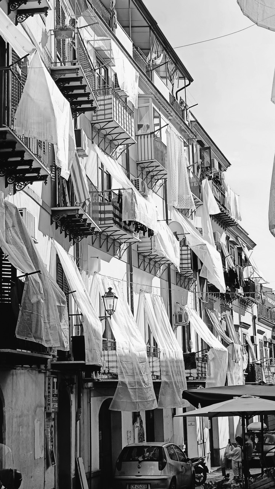


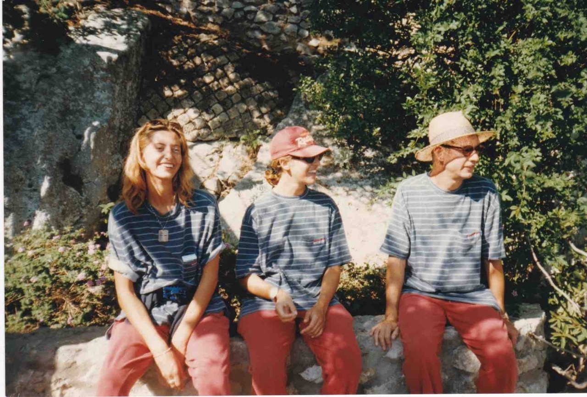
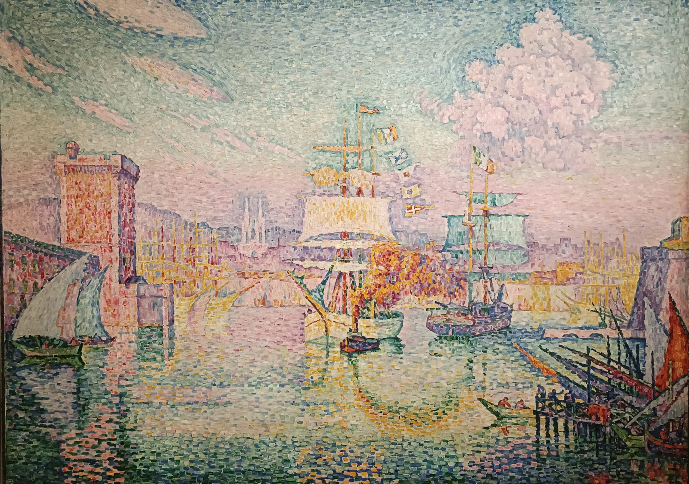
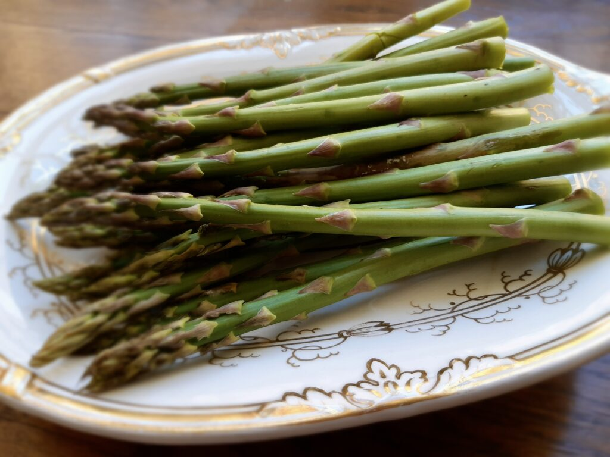

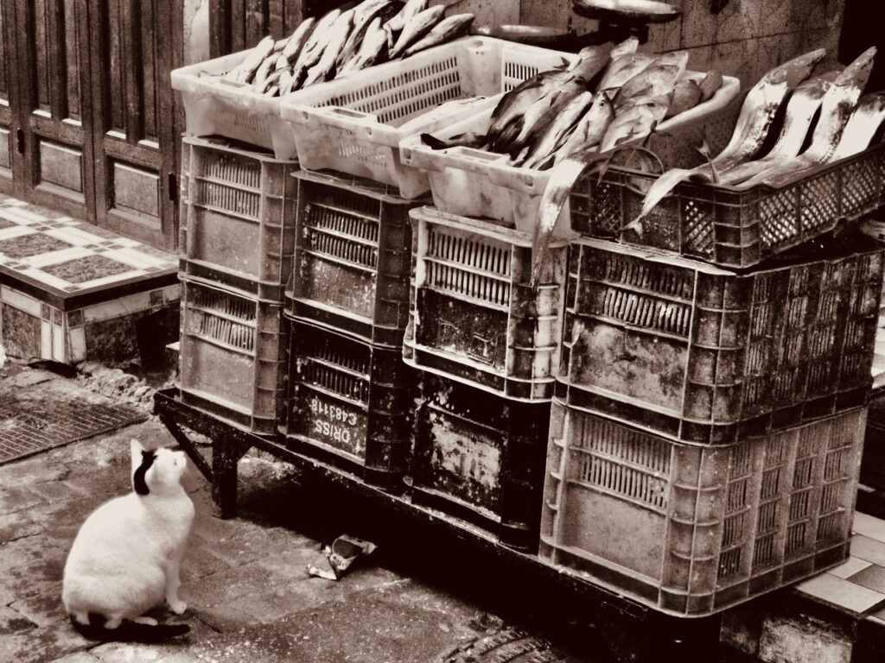
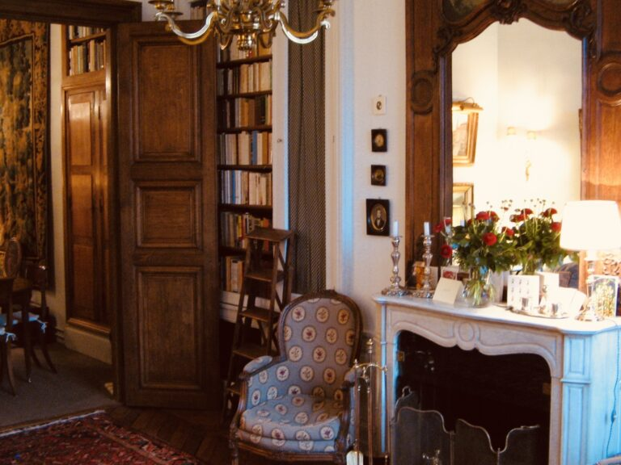

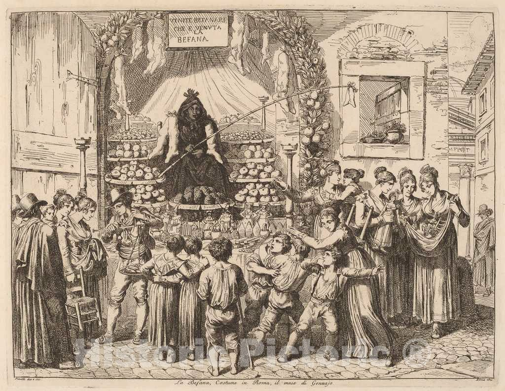
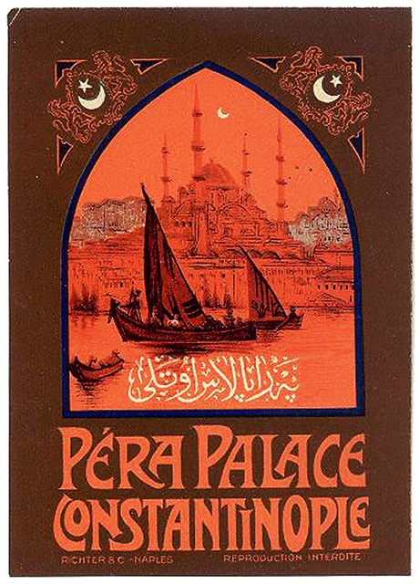
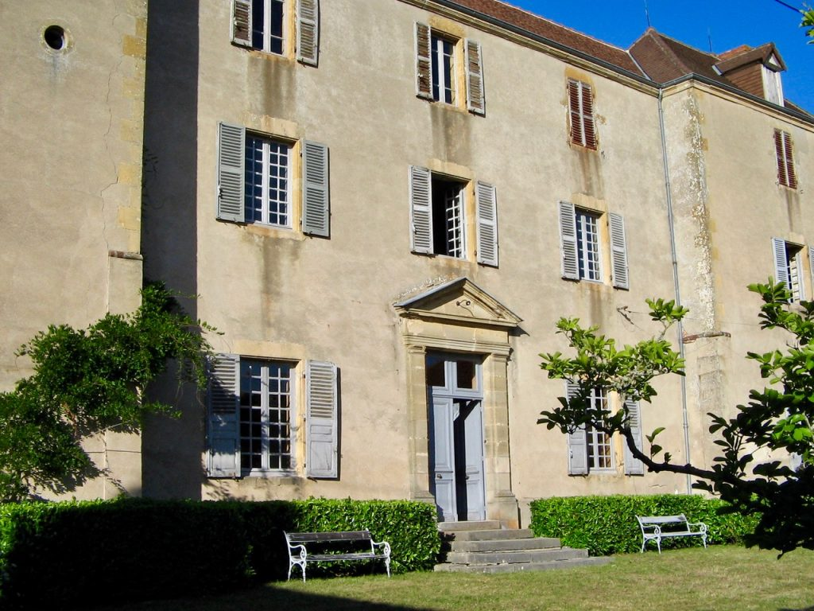
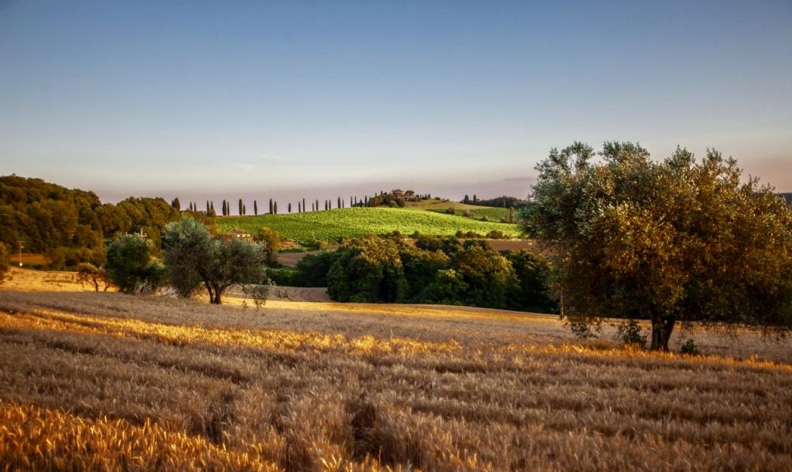
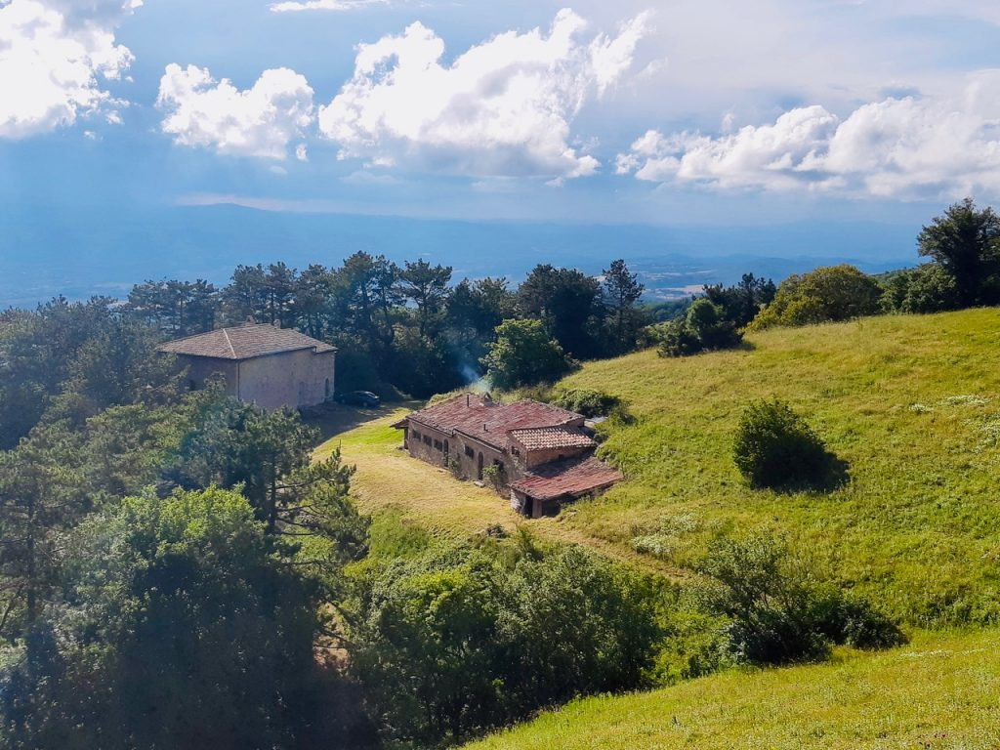
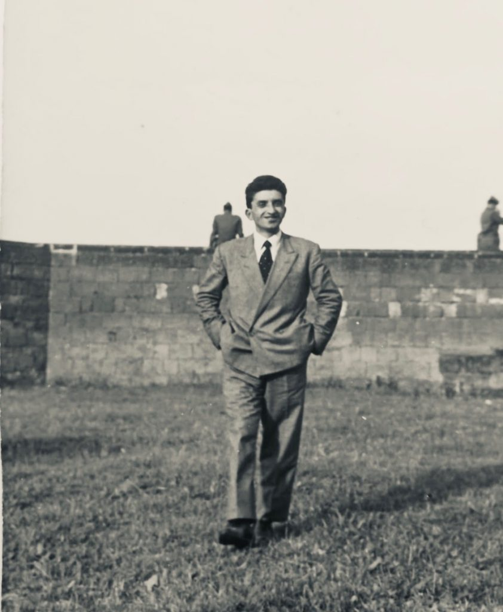


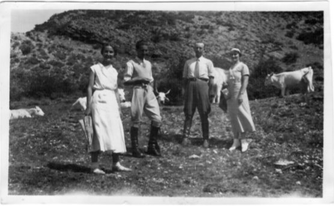